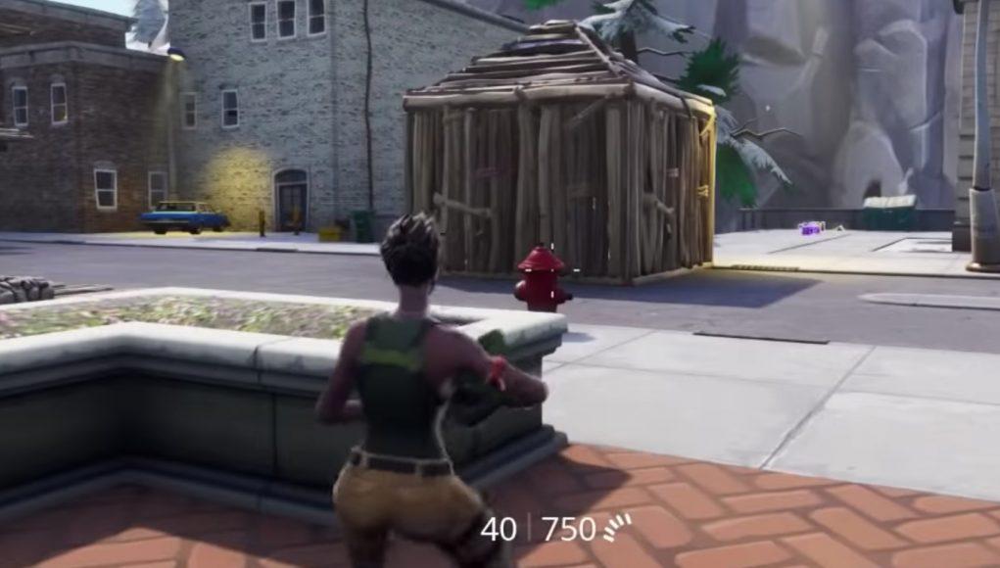

Turtling is basically where someone boxes themselves with 4 walls around them and a floor+pyramid above their heads. Previously I mentioned that most of the time you should contest for highground but sometimes staying on low ground might be a better scenario for certain situations as I will give certain scenarios further throughout this page.
There are many situations where turtling would be the most optimal play and in most situations you would turtle when:
If you are turtled properly that means there is very little chance of you getting harmed by other players unless a certain piece falls off, this means you are protected for the time being in the box. If there is someone trying to get into your box, then turtling can stall a lot of time for eiether your teammate (if you are playing duos/squads) or another opponent to eliminate the one contesting you. Basically, turtling offers you a lot of protection in the game. I also mentioned that you can turtle to outskill your opponent and this can be used by editing, here's an example of someone you can do inside or outside the box to outplay your opponent.
If you can turtle, so can your opponents and it can be pretty annoying since it'salmost impossible regaining control of an opponent'sbuild if they are holding down left button on the piece. There are many ways that have a really good chance of countering a turtler but the most consistent method would be phasing. This is a video showcasing how you can counter a turtler.
Return to the top of the page